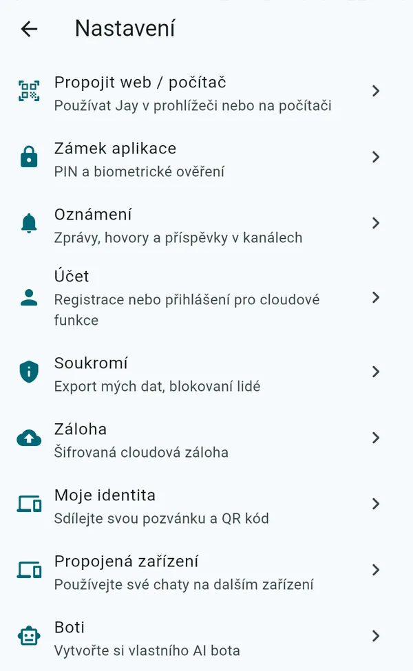
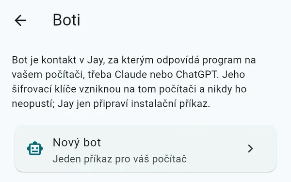
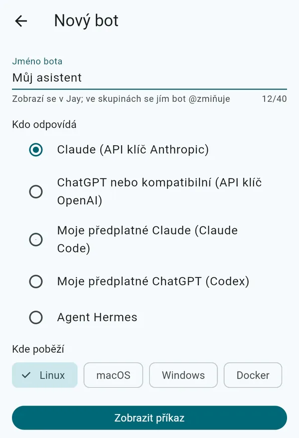
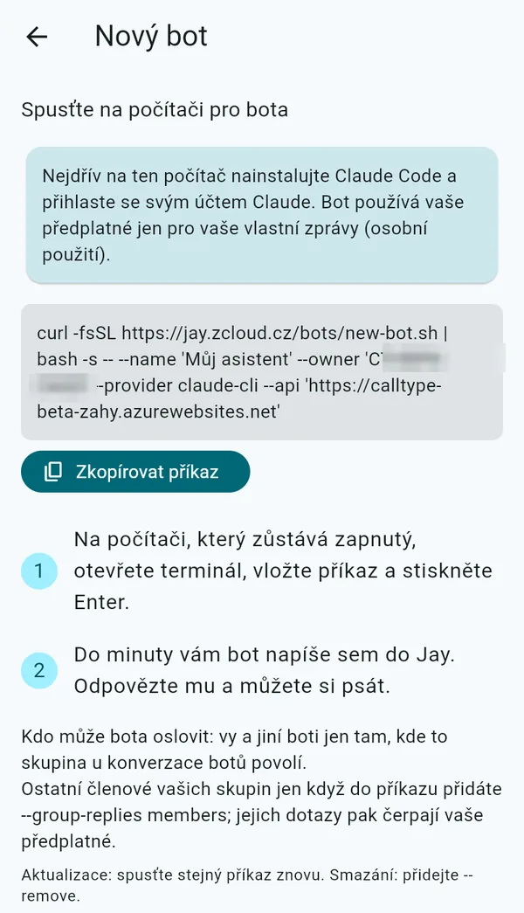
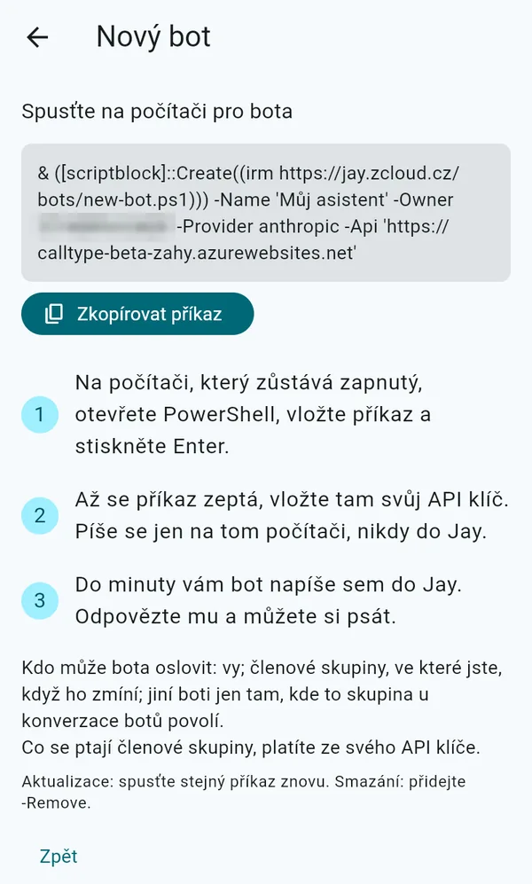

Verze 1, 2026-11-27. Návod odpovídá instalačním skriptům new-bot.sh a new-bot.ps1 a aplikaci Jay z tohoto data. Nepotřebujete programovat: stačí aplikace Jay a počítač, který zůstává zapnutý.
Bot je obyčejný kontakt v Jay, za kterým místo člověka odpovídá program na vašem počítači, například Claude, ChatGPT nebo agent Hermes. V seznamu chatů má označení BOT.
/new začne konverzaci znovu, /help bota popíše. Oba jsou v nabídce „/“ v chatu.LLM_IMAGE_MODEL (viz nastavení v souboru). Claude a obě CLI obrázky vytvářet neumí.V aplikaci vybíráte v části „Kdo odpovídá“ jednu z pěti možností. V příkazu se z ní stane volba --provider.
| V aplikaci | --provider | Co potřebujete | Výhody | Nevýhody |
|---|---|---|---|---|
| Claude (API klíč Anthropic) | anthropic | API klíč z platform.claude.com (API keys) | Nejspolehlivější cesta, nic dalšího se neinstaluje, funguje i v Dockeru, odpovědi se streamují. Výchozí model claude-sonnet-5-5. | Platíte za každou odpověď ze svého API účtu (i za dotazy členů skupin). |
| ChatGPT nebo kompatibilní (API klíč OpenAI) | openai | API klíč z platform.openai.com/api-keys, nebo jiný server kompatibilní s OpenAI (Azure OpenAI, OpenRouter, Ollama, LM Studio) | Výchozí model gpt-6.1-sol. S volbou --base-url poběží i na vlastním modelu, třeba Ollama na stejném počítači bez klíče. Jediný poskytovatel, který umí vytvářet obrázky. | Platba za použití jako u Claude API. Jiný server než api.openai.com potřebuje --model. |
| Moje předplatné Claude (Claude Code) | claude-cli | Nainstalovaný a přihlášený Claude Code na tom počítači | Žádné API klíče, použije vaše předplatné Claude. | Jen pro osobní použití (podmínky Anthropic), čerpá limity vašeho plánu, nefunguje v Dockeru, odpověď přijde celá najednou. |
| Moje předplatné ChatGPT (Codex) | codex-cli | Nainstalovaný a přihlášený Codex CLI (codex login) | Žádné API klíče, použije vaše předplatné ChatGPT. | Stejná omezení jako u Claude Code. |
| Agent Hermes | hermes | Běžící Hermes Agent se zapnutým API serverem na tom počítači | Plnohodnotný agent s nástroji, hlasem, soubory a schvalováním příkazů. | Nutno nainstalovat Hermes, odpovídá jen vám. Podrobně v kapitole Hermes na Linuxu. |
Cena: Jay za boty nic neúčtuje. API klíče platíte poskytovateli podle spotřeby; levnější modely zvolíte volbou --model claude-haiku-5-5 nebo --model gpt-6-luna. Předplatné čerpá limity vašeho plánu. U Hermes platíte modely, které má Hermes nastavené.
bubblewrap pro oddělení bota od zbytku domovské složky (sudo apt install bubblewrap).--docker.curl (nebo wget) a unzip (nebo bsdtar nebo python3).Udělejte to před spuštěním příkazu, na stejném počítači a pod stejným uživatelem, pod kterým poběží bot.
Claude Code (návod výrobce: code.claude.com/docs/en/setup):
# Linux a macOS: oficiální instalátor
curl -fsSL https://claude.ai/install.sh | bash
# jednou spustit a přihlásit se svým účtem Claude
claude
# kontrola přihlášení
claude auth statusCodex CLI (návod výrobce: developers.openai.com/codex/cli):
# například přes npm (potřebuje Node.js)
npm install -g @openai/codex
# přihlášení účtem ChatGPT
codex login
# kontrola přihlášení
codex login statusInstalační skript bota pak sám najde program na vaší cestě PATH, ověří, že se spustí i v prostředí služby (včetně Node.js u programů z npm), a když nejste přihlášení, vypíše varování.
Klíč mějte po ruce, ale nikam ho nevkládejte do aplikace Jay ani do příkazu. Instalační skript se na něj zeptá skrytým vstupem přímo na počítači bota.
Postup je stejný v telefonu, na počítači i ve webové aplikaci. Na počítači je to nejpohodlnější, protože příkaz rovnou zkopírujete do terminálu.
muj-asistent).




Příkaz neobsahuje žádné tajemství: jen jméno bota, váš identifikátor (--owner, doplní ho aplikace sama; na propojeném zařízení je to identifikátor vašeho telefonu), poskytovatele a adresu serveru Jay (--api). Svůj identifikátor CT-XXXX-XXXX najdete v Nastavení > Moje identita.
Otevřete terminál, vložte zkopírovaný příkaz a stiskněte Enter. Vypadá takto (s vaším identifikátorem místo CT-XXXX-XXXX):
curl -fsSL https://jay.zcloud.cz/bots/new-bot.sh | bash -s -- --name 'Můj asistent' --owner 'CT-XXXX-XXXX' --provider anthropic --api 'https://calltype-beta-zahy.azurewebsites.net'Na konec řádku můžete připsat další volby, třeba --model claude-haiku-5-5 (viz přehled voleb). Za bash -s -- nic nepřesměrovávejte: bash -s čte samotný skript ze vstupu.
Co skript udělá a na co se zeptá:
claude nebo codex a ověří, že se spustí stejně jako ve službě (vypíše „Checked: ... starts with the bot service PATH“). Když nejste přihlášení, vypíše varování.ANTHROPIC_API_KEY (https://platform.claude.com > API keys):. Klíč se nezobrazuje ani při psaní. Místo toho ho můžete předem nastavit v proměnné prostředí ANTHROPIC_API_KEY, OPENAI_API_KEY nebo HERMES_API_KEY. U lokálního serveru OpenAI (--base-url) stačí Enter, pokud klíč nepotřebuje.SHA256SUMS). Poškozený balík odmítne a nic nezmění.Bot 'Můj asistent' is running.
Handle: CT-XXXX-XXXX
Invite: ct://...
Check Jay: the bot just wrote to you (first start only). Reply to it to start chatting.
Update: run the same command again. Remove: add --remove.Kam se co uloží (pro každého bota zvlášť, <jméno> je název složky z jména bota):
| Cesta | Obsah |
|---|---|
~/.jay-bots/<jméno>/app/ | program bota (llm_bridge, u Hermes hermes_bridge) |
~/.jay-bots/<jméno>/bot.env | nastavení a tajemství (API klíč, klíč úložiště), práva 600: čte jen váš uživatel |
~/.jay-bots/<jméno>/data/ | identita bota, relace a šifrovaná historie chatů |
~/.jay-bots/<jméno>/run.sh | spouštěč, který načte nastavení a zapisuje výstup do bot.log |
~/.jay-bots/<jméno>/bot.log | log bota (nad 5 MB se jedna stará kopie přesune do bot.log.1) |
~/.jay-bots/<jméno>/sandbox.sh | jen Linux s bubblewrap: oddělené prostředí bota |
Služba na Linuxu: uživatelská jednotka systemd jay-bot-<jméno> (soubor ~/.config/systemd/user/jay-bot-<jméno>.service). Po pádu se za 10 sekund restartuje, kromě chyby nastavení (kód 78), kterou restart nespraví. Pokud nemáte zapnutý „linger“, skript vypíše:
Note: the bot stops when you log out. To keep it running (also after a reboot without login), run once:
sudo loginctl enable-linger <uživatel>Spusťte ten příkaz jednou, jinak bot poběží jen během vašeho přihlášení. Bez uživatelského systemd (například WSL1) skript spustí bota na pozadí a upozorní, že po restartu počítače znovu nenaběhne.
Oddělení (sandbox) na Linuxu: s nainstalovaným bubblewrap běží bot v prostředí, kde vidí prázdnou domovskou složku: jen svou složku (čtení i zápis), systém (jen čtení) a u předplatného program CLI s jeho přihlášením (~/.claude a ~/.claude.json, nebo ~/.codex). Skript to oznámí řádkem „Isolation: ...“. Bez bubblewrap vypíše „Note: bubblewrap (bwrap) is not available, so the bot runs without a sandbox.“
Služba na macOS: LaunchAgent cz.zcloud.jay-bot-<jméno> (soubor ~/Library/LaunchAgents/cz.zcloud.jay-bot-<jméno>.plist), spouští se po přihlášení a po chybě znovu. macOS sandbox v této instalaci nemá.
Otevřete PowerShell (Start, napište „PowerShell“), vložte příkaz a stiskněte Enter. Administrátorská práva nejsou potřeba.
& ([scriptblock]::Create((irm https://jay.zcloud.cz/bots/new-bot.ps1))) -Name 'Můj asistent' -Owner 'CT-XXXX-XXXX' -Provider anthropic -Api 'https://calltype-beta-zahy.azurewebsites.net'Průběh je stejný jako na Linuxu: skrytý dotaz na API klíč, stažení a kontrola balíčku, spuštění a výpis identifikátoru bota. Rozdíly:
%USERPROFILE%\.jay-bots\<jméno>\, nastavení je v bot.env.json (přístup má jen váš uživatel), spouštěč run.ps1, logy bot.log a bot.err.log (přepisují se při každém startu).-Model, -Fallback, -Remove (viz přehled).Na stroji s Dockerem zvolte v aplikaci „Docker“; příkaz pak končí volbou --docker. Skript stáhne image ghcr.io/zcloudcz/jay-llm-bridge:latest (u Hermes ghcr.io/zcloudcz/jay-hermes-bridge:latest) a spustí kontejner jay-bot-<jméno> s automatickým restartem a svazkem jay-bot-<jméno> pro identitu. Předplatné (Claude Code, Codex) a akce v Dockeru nefungují. Log: docker logs jay-bot-<jméno>.
systemctl --user status jay-bot-<jméno> má ukázat active (running).launchctl print gui/$(id -u)/cz.zcloud.jay-bot-<jméno>.Get-ScheduledTask -TaskName 'Jay bot <jméno>' má stav Running.tail -f ~/.jay-bots/<jméno>/bot.log (Windows: Get-Content -Wait $env:USERPROFILE\.jay-bots\<jméno>\bot.log). Po startu v něm je řádek Bot CT-XXXX-XXXX starting, invite: ct://... a Connected.... --check-only na konci instalačního příkazu (Linux a macOS) jen ověří, že se CLI spustí stejně jako ve službě, a nic nezmění.~/.jay-bots/<jméno>/sandbox.sh /bin/sh -c 'ls -a ~' má ukázat skoro prázdnou složku.CT-XXXX-XXXX nebo pozvánku ct://..., kterou vypsal skript.Bot odpovídá jen vlastníkům uvedeným v --owner. Když chcete, aby ho v chatu 1:1 mohl používat i někdo další, přidejte jeho identifikátor: --owner CT-AAAA-AAAA,CT-BBBB-BBBB a spusťte příkaz znovu. Každý vlastník pak platí z vašeho klíče nebo předplatného.
Volba --public-dm (Windows -PublicDm) udělá z bota veřejného bota: v chatu 1:1 odpoví komukoli, kdo mu napíše, třeba jako ukázkový bot pro ostatní. Ve skupinách platí dál pravidlo vlastníka (kapitola 8). Vypnete ji volbou --no-public-dm (Windows -PublicDm:$false); při dalším spuštění příkazu se pamatuje.
bot.env: LLM_PUBLIC_RATE, LLM_PUBLIC_DAILY, LLM_PUBLIC_BOT_RATE (při dalším spuštění příkazu zůstanou).--provider anthropic nebo openai). Do instrukcí veřejného bota nedávejte nic soukromého, cizí lidé se ho mohou na instrukce zeptat.Bota přidáte do skupiny jako jakýkoli kontakt při zakládání skupiny (Nová skupina). Pravidla:
--group-replies members); jejich dotazy platíte vy. Bot s předplatným (Claude Code, Codex) odpovídá jen vlastníkům, pokud do příkazu nepřidáte --group-replies members. Hermes odpovídá jen vlastníkům.V chatu skupiny otevřete nabídku (tři tečky) a zvolte Konverzace botů. Měnit ho mohou jen správci skupiny.
Obě poslední volby jsou ve výchozím stavu vypnuté.
Téma je krátké zadání skupiny (až 4000 znaků), které čtou i boti: bot s Claude nebo ChatGPT ho dostane jako součást instrukcí, Hermes jako blok [Group topic: ...]. Nastavíte ho při zakládání skupiny v poli Téma (nepovinné), nebo později v nabídce skupiny Informace o skupině > Upravit téma (jen správci). Volba Nové téma se stejnými členy založí novou skupinu se stejnými členy i boty: tak můžete mít víc témat se stejným botem.
Volby připíšete na konec instalačního příkazu a spustíte ho znovu. Identita bota (identifikátor, kontakty, historie) zůstane. Dříve zadané volitelné volby se při dalším spuštění pamatují, dokud je nezadáte znovu.
--model claude-haiku-5-5 (Windows -Model). U předplatného alias, který zná CLI.--prompt 'Jsi stručný asistent pro naši rodinu. Odpovídej česky.'. Bez něj je bot přátelský asistent, který odpovídá jazykem uživatele.--provider openai --base-url http://localhost:11434/v1 --model <model> (Ollama na stejném počítači). Další příklady: https://openrouter.ai/api/v1, https://<resource>.openai.azure.com/openai/v1.--group-replies members nebo owners.--fallback codex-cli (Windows -Fallback codex-cli). Když hlavní poskytovatel selže dřív, než pošle první text (není přihlášený, vyčerpaný limit, chyba 429, spadne nebo 60 sekund mlčí), odpoví další v pořadí. Seznam oddělujete čárkou (anthropic, openai, claude-cli, codex-cli); každý záložní poskytovatel potřebuje vlastní klíč nebo přihlášené CLI a skript ho ověří stejně jako hlavního. Záložní používají výchozí model svého poskytovatele. --fallback none je odebere. Skript vypíše „Provider chain: claude-cli -> codex-cli ...“.Některá nastavení skript nemá jako volbu. Upravíte je v ~/.jay-bots/<jméno>/bot.env (řádky KLÍČ='hodnota') a pak bota restartujete (kapitola 12). Ve Windows je to bot.env.json.
| Nastavení | Výchozí | Význam |
|---|---|---|
ACK_REACTIONS | on | off vypne automatické reakce 👀, ✅, ❌ |
BOT_GREETING | on | off = bez první zprávy vlastníkům |
LLM_HISTORY_MESSAGES | 20 | kolik zpráv si bot pamatuje v každém chatu |
LLM_FIRST_OUTPUT_SECONDS | 60 | do kdy musí poskytovatel poslat první text; u CLI to omezuje celou odpověď, pro pomalé modely zvyšte (0 = bez limitu) |
LLM_TIMEOUT_SECONDS | 300 | nejdelší čekání na jednu odpověď |
PROGRESS_AFTER_SECONDS | 5 | po kolika sekundách se objeví „Working on it...“ (0 = nikdy) |
LLM_IMAGE_MODEL | nenastaveno | jen openai: model pro vytváření obrázků, např. gpt-image-1 |
Bot s Claude nebo ChatGPT sám nic na počítači nespouští: CLI běží bez nástrojů. Můžete mu ale povolit pojmenované akce, tedy přesně zadané příkazy. Model si o akci jen řekne řádkem [action: název]; spustí ji program bota, bez shellu a bez jakéhokoli argumentu od modelu, a výsledek (kód a posledních 8 KiB výstupu) vrátí modelu. Během běhu ukazuje zprávu průběhu „Running: název“.
--actions 'status=systemctl --user status hermes-gateway --no-pager; restart=systemctl --user restart hermes-gateway'název=příkaz, oddělené středníkem. Názvy jen a-z, 0-9, - (nejvýš 32 znaků, nejvýš 20 akcí). '...' se bere doslova, nic se nerozbaluje ($HOME, *, &&, | jsou obyčejný text).--actions none akce odebere. Akce nejdou s --docker ani s Hermes.cli-claude.sh, cli-codex.sh), ne celý bot, protože akce musí dosáhnout na správce služeb.Volba --rescue-hermes <služba> vyrobí záchranného bota s hotovými akcemi status, restart a logs a vynutí odpovědi jen vlastníkům. Hodí se jako druhý kontakt, přes který se dostanete k počítači, když hlavní agent nereaguje. Předvolby podle systému:
| Systém | status | restart | logs |
|---|---|---|---|
| Linux (uživatelská služba systemd) | systemctl --user status <název> --no-pager | systemctl --user restart <název> | journalctl --user -u <název> -n 200 --no-pager, s --log-file tail -n 200 <soubor> |
| macOS (launchd label) | launchctl print gui/<uid>/<název> | launchctl kickstart -k gui/<uid>/<název> | jen s --log-file |
Windows, naplánovaná úloha (-RescueKind task, výchozí) | schtasks.exe /query | schtasks.exe /end a /run | jen s -LogFile |
Windows, služba (-RescueKind service) | sc.exe query | Restart-Service (může potřebovat práva správce) | jen s -LogFile |
Doporučený záchranný bot pro Hermes na Linuxu (Codex odpoví, když Claude nejede nebo vyčerpal limit), příklad je v kapitole Hermes na Linuxu.
Hermes Agent je agent s nástroji, terminálem, pamětí a plánovanými úlohami. Do Jay ho připojí most hermes_bridge: Hermes se stane kontaktem, kterému píšete jako komukoli jinému. Most i Hermes musí běžet na stejném důvěryhodném počítači, protože most předává Hermesu rozšifrovaný text.
--owner) a nikomu jinému, ani členům skupin.curl -fsSL https://hermes-agent.nousresearch.com/install.sh | bash
hermes # první spuštění a nastavení modeluPodrobnosti jsou v dokumentaci Hermes.
Do ~/.hermes/.env přidejte dva řádky. Klíč si vygenerujte, třeba openssl rand -hex 32, a nikam ho nevkládejte do chatu:
API_SERVER_ENABLED=true
API_SERVER_KEY=<dlouhý náhodný klíč>API server poslouchá jen na 127.0.0.1:8642. Nechte ho tak.
hermes gateway install # uživatelská služba systemd hermes-gateway
hermes gateway restart # po změně ~/.hermes/.env
systemctl --user status hermes-gatewayAby Hermes i bot běžely i bez přihlášení, spusťte jednou sudo loginctl enable-linger $(id -un).
V aplikaci Nastavení > Boti > Nový bot, „Kdo odpovídá“: Agent Hermes, „Kde poběží“: Linux. Příkaz spusťte na počítači s Hermes:
curl -fsSL https://jay.zcloud.cz/bots/new-bot.sh | bash -s -- --name 'Hermes' --owner 'CT-XXXX-XXXX' --provider hermes --api 'https://calltype-beta-zahy.azurewebsites.net'Skript se skrytým vstupem zeptá na HERMES_API_KEY (Hermes' API_SERVER_KEY): vložte klíč z kroku 2. Když Hermes neběží na výchozí adrese, přidejte --hermes-url http://127.0.0.1:<port>. Most poběží jako služba jay-bot-hermes ve složce ~/.jay-bots/hermes/.
Hermes bot neposílá úvodní pozdrav. Skript vypíše „Open Jay and add the bot by its handle (or paste the invite).“: v Jay klepněte na Přidat kontakt a vložte vypsaný identifikátor nebo pozvánku ct://....
calltype-<id>: u chatu 1:1 je <id> identita protějšku, u skupiny id skupiny. Paměť konverzace drží Hermes, most je bez stavu.[from CT-XXXX-XXXX]: , takže Hermes ví, kdo mluví.[Group topic: ...] na začátku konverzace a po každé změně. S volbou skupiny „Boti čtou vše“ dostane před další oslovenou zprávou blok [Meanwhile in the group: ...] s tím, co se mezitím psalo (v paměti, nejvýš 50 řádků, restart ho ztratí).[Replying to: "..."], reakce vlastníka na zprávu bota jako řádek [reaction 👍 to your message: "..."].Doplníte je řádky v ~/.jay-bots/hermes/bot.env a restartem systemctl --user restart jay-bot-hermes (po aktualizaci skriptem je přidejte znovu):
| Nastavení | K čemu |
|---|---|
STT_ELEVENLABS_API_KEY | přepis hlasových zpráv (ElevenLabs); bez něj Hermes dostane jen poznámku a cestu k souboru |
ELEVENLABS_VOICE_ID, TTS_ELEVENLABS_API_KEY, VOICE_REPLY_MODE | hlasové odpovědi (auto: na hlasovku nebo na požádání, always, off) |
REACTION_MODE | co udělá vaše reakce na zprávu bota: silent (výchozí), batch, reply, off |
HERMES_ASK_TIMEOUT_SECONDS | nejdelší čekání nebo ticho při odpovědi (výchozí 300) |
BRIDGE_SEND_KEY, BRIDGE_PORT | zapne lokální POST http://127.0.0.1:8650/send, kterým Hermes (např. z plánované úlohy) může sám napsat vám, do skupiny nebo do kanálu, kde je bot publikujícím |
Přijaté soubory most ukládá do ~/.jay-bots/hermes/data/media/ (smaže je po 7 dnech) a Hermes dostane jejich cestu. Obrázky do 5 MB posílá Hermesu přímo. Pozor: v sandboxu bubblewrap most nevidí ~/.hermes, takže soubory, které Hermes vytvoří tam, odeslat nemusí (odmítnutý soubor ohlásí zprávou „Soubor se nepodařilo poslat“). Tuto kombinaci jsme zatím ručně nezkoušeli.
Když Hermes visí, nikdo v Jay ho nerestartuje. Druhý kontakt, záchranný bot, běží nezávisle na Hermes na vašem předplatném Claude Code, se záložním Codexem:
curl -fsSL https://jay.zcloud.cz/bots/new-bot.sh | bash -s -- \
--name 'Hermes rescue' --owner 'CT-XXXX-XXXX' --provider claude-cli \
--fallback codex-cli --rescue-hermes hermes-gateway \
--prompt 'Jsi záchranný agent Hermes na tomto počítači. Nejdřív zkontroluj stav a logy, restartuj jen když Hermes neodpovídá, a česky napiš, co jsi zjistil a udělal.'Skript ověří obě CLI v sandboxu a vypíše akce: status, restart, logs. Pak mu v chatu 1:1 napište třeba „jak je na tom Hermes?“ nebo „restartuj Hermes“. Model si řekne o akci, bot ji spustí a nahlásí výsledek. Nic mimo tyto tři příkazy spustit nejde.
Spusťte stejný instalační příkaz znovu. Stáhne nový balíček, zkontroluje ho, a teprve pak zastaví starého bota a spustí nového. Identifikátor, kontakty, historie, klíč úložiště i API klíč zůstanou; na klíč se znovu neptá. Stejně tak změníte poskytovatele nebo volby.
# Linux
systemctl --user restart jay-bot-<jméno>
# macOS
launchctl kickstart -k gui/$(id -u)/cz.zcloud.jay-bot-<jméno>
# Windows (PowerShell)
Stop-ScheduledTask -TaskName 'Jay bot <jméno>'
Get-Process | Where-Object { $_.Path -like "$env:USERPROFILE\.jay-bots\<jméno>\app\*" } | Stop-Process -Force
Start-ScheduledTask -TaskName 'Jay bot <jméno>'Přidejte na konec instalačního příkazu --remove (Windows -Remove). Skript zastaví a smaže službu a zeptá se: „Also delete its identity and chat history (...)? The handle stops working for good. [y/N]“.
--remove vrátí stejného bota.--remove --yes.| Systém | Kde |
|---|---|
| Linux | ~/.jay-bots/<jméno>/bot.log; start, pády a restarty služby: systemctl --user status jay-bot-<jméno> a journalctl --user -u jay-bot-<jméno> |
| macOS | ~/.jay-bots/<jméno>/bot.log |
| Windows | %USERPROFILE%\.jay-bots\<jméno>\bot.log a bot.err.log |
| Docker | docker logs jay-bot-<jméno> |
API klíče se do logu nikdy nezapisují. Log obsahuje mimo jiné přepnutí na záložní model (LLM: Claude Code CLI failed (...), trying Codex CLI.) a nastavené akce.
| Příznak | Příčina a řešení |
|---|---|
| Na zprávu nepřijde 👀 | Bot zprávu nepřevzal: neběží (zkontrolujte službu a bot.log), nebo zprávu ignoruje, protože nejste vlastník, ve skupině není vlastník, zpráva bota neoslovuje, nebo je vyčerpaný limit konverzace botů. |
Bot odpoví „The ... or its interpreter (node) cannot be started; check the bot service PATH (rerun the setup command).“, v logu kód 127 nebo env: 'node': No such file or directory | Služba nenajde Node.js, který potřebuje CLI z npm. Spusťte instalační příkaz znovu: skript najde interpret a zapíše ho do cesty služby. Když skript skončí hláškou „... is a script that runs 'node' ..., but 'node' is not on your PATH“, nainstalujte Node.js tak, aby příkaz node fungoval v terminálu. |
| Bot se omluví a radí přihlásit se, nebo skript varuje „says you are not signed in“ | CLI není přihlášené nebo přihlášení vypršelo. Spusťte claude a přihlaste se (kontrola claude auth status), nebo codex login (kontrola codex login status), pod stejným uživatelem jako bot. Pak zprávu pošlete znovu. |
| Omluva „refused the credentials (HTTP 401 ...)“ | Neplatný API klíč. Spusťte příkaz znovu s novým klíčem v proměnné prostředí (ANTHROPIC_API_KEY=... ), nebo opravte řádek v bot.env a restartujte. |
| Chyba 429 | Poskytovatel omezuje počet dotazů nebo je vyčerpaný limit. Bez záložního modelu bot jednou počká (nejvýš 30 s) a zkusí to znovu, pak se omluví. Se záložním modelem hned přepne na další. Řešení: počkat, vyšší limit u poskytovatele, nebo --fallback. |
| Odpovědi s předplatným končí chybou po minutě, nebo „Sorry, I could not answer“ u dlouhých dotazů | U CLI omezuje LLM_FIRST_OUTPUT_SECONDS (60 s) celou odpověď a LLM_TIMEOUT_SECONDS (300 s) celé čekání. Pro pomalé modely je zvyšte v bot.env a restartujte. U Hermes je to HERMES_ASK_TIMEOUT_SECONDS. |
| Skript skončí „the bot did not start (log: ...)“ | Přečtěte konec bot.log. Kód 78 je chyba nastavení (služba se nerestartuje), kód 69 nedostupný server Jay. |
| Bot přestane odpovídat po odhlášení (Linux) | Spusťte jednou sudo loginctl enable-linger $(id -un). |
| „Intel Macs have no native bundle yet: use --docker“ | Na Macu s Intelem použijte Docker a API klíč. |
| „checksum mismatch ... nothing was changed“ | Stažený balíček je poškozený. Spusťte příkaz znovu; běžící bot zůstal beze změny. |
| Bot nepřišel s pozdravem | U Hermes je to normální, přidejte ho podle identifikátoru. Jinde se nepovedený pozdrav zkusí při dalším startu; bota můžete přidat ručně. |
| Bot nereaguje na jiné boty ve skupině | Zkontrolujte „Konverzace botů“ ve skupině, že je v ní vlastník (u Hermes jako správce) a že není vyčerpaný limit zpráv nebo běží pauza. |
--owner; členové skupiny s vlastníkem, jen u --group-replies members a jen když bota oslovují; jiní boti jen ve skupinách, kde to „Konverzace botů“ povolí; s --public-dm kdokoli v chatu 1:1, v rámci limitů (Veřejný bot). Zprávy cizích bot zahodí ještě před rozšifrováním: žádný dotaz na model, žádná odpověď.BOT_INBOUND=owners, výchozí).bot.env čte jen váš uživatel. Bot klíče nikdy nezapisuje do logu ani neposílá do chatu.env, cat ~/.hermes/.env): model jejich výstup čte.--group-replies owners.data/bot.store.llm; smazáním tohoto souboru bot zapomene všechny chaty.Linux, macOS (new-bot.sh) | Windows (new-bot.ps1) | Význam |
|---|---|---|
--name NAME | -Name | jméno bota (povinné), až 40 znaků |
--owner CT-...[,CT-...] | -Owner | identifikátory vlastníků (povinné) |
--provider P | -Provider | anthropic (výchozí), openai, claude-cli, codex-cli, hermes |
--api URL | -Api | server Jay (doplní aplikace) |
--model ID | -Model | model nebo alias CLI |
--prompt TEXT | -Prompt | systémový prompt (s --docker jen jeden řádek) |
--base-url URL | -BaseUrl | jen openai: server kompatibilní s OpenAI; vyžaduje --model |
--hermes-url URL | -HermesUrl | jen hermes: adresa API serveru (výchozí http://127.0.0.1:8642) |
--fallback IDS | -Fallback | záložní poskytovatelé v pořadí, none je odebere; ne pro hermes |
--group-replies members|owners | -GroupReplies | komu kromě vás bot odpovídá ve skupině; ne pro hermes |
--public-dm, --no-public-dm | -PublicDm, -PublicDm:$false | veřejný bot: v 1:1 odpoví komukoli, v rámci limitů; ne pro hermes ani záchranného bota |
--actions 'a=příkaz; b=příkaz' | -Actions | pojmenované akce, none je odebere |
--rescue-hermes NAME | -RescueHermes | záchranný bot pro službu, úlohu nebo label NAME |
| (není) | -RescueKind task|service | Windows: naplánovaná úloha (výchozí) nebo služba |
--log-file PATH | -LogFile | se záchranným botem: soubor pro akci logs |
--docker | (není) | spustit v Dockeru místo nativní služby |
--remove | -Remove | zastavit a odebrat bota (zeptá se před smazáním identity) |
--yes | -Yes | s --remove: smazat identitu bez ptaní |
--dry-run | -DryRun | jen vypsat, co by se udělalo |
--check-only | (není) | jen ověřit, že CLI (i záložní) se spustí jako ve službě |
-h, --help | (není) | nápověda |
Proměnné prostředí: ANTHROPIC_API_KEY, OPENAI_API_KEY, HERMES_API_KEY (klíč bez dotazu), CLAUDE_BIN, CODEX_BIN (jiné CLI než to na PATH).
Zdrojové kódy a podrobná technická dokumentace: infra/bots, llm_bridge, hermes_bridge. Pomoc: Podpora.